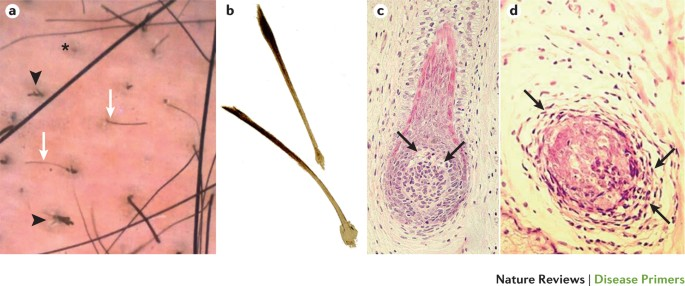
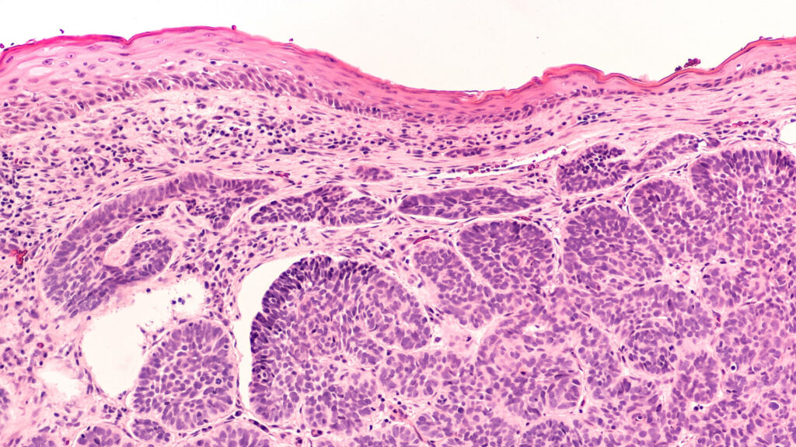
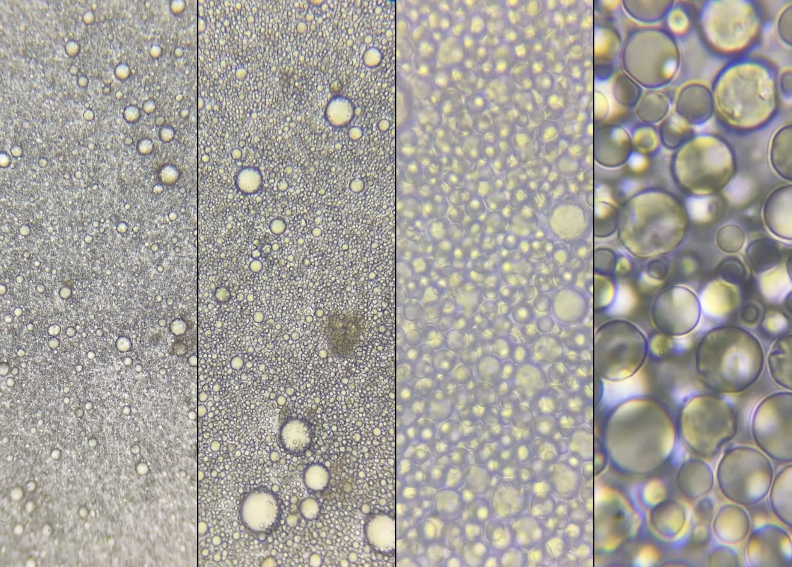
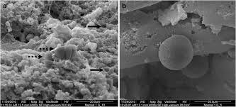
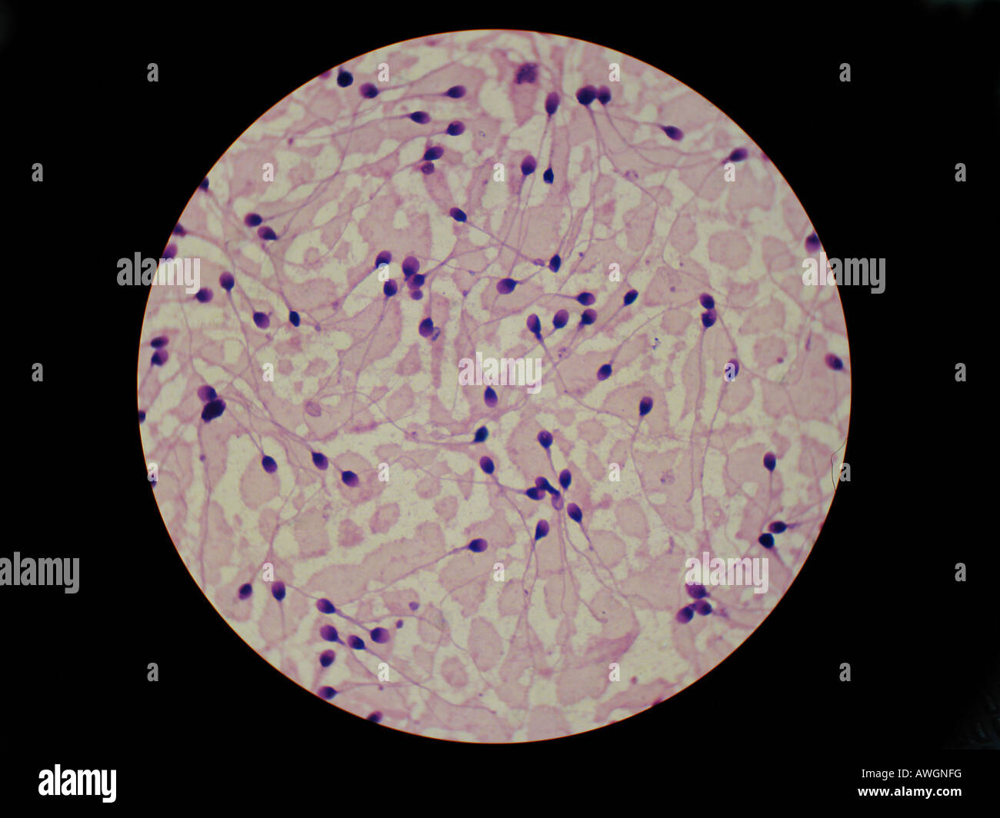

Note: This page is a speculative theory written by a student. It is not established science and not medical advice. Nothing here has been tested or peer reviewed, and it should not be used to diagnose or treat anything.
I theorize that long-term diet, including how animal foods, milk and other fats are processed and combined, could influence how cells grow, and that this might relate to some cancers. I also speculate that fat-rich cells may play a part. This is a question I want to test, and I am not claiming that diet is the cause of cancer.
The images below come from other sources. They show different conditions. Their similar look is my starting point for a question, and not evidence of a shared cause or a progression between them.





A good test compares people with different intakes of the foods in question, adjusts for smoking, weight, age and family history, and follows them for cancer over years. A second test is in the lab: do cells exposed to these fats grow differently from controls? And if my claim that skin conditions are early cancer stages were right, biopsies of people with tinea versicolor or alopecia areata should show cancerous cells at higher rates than controls. I expect they will not, and if so, that part of the theory is dropped.
Please do not use this page to treat cancer or any skin condition, or to skip screening or treatment. Early detection and treatment save lives. If you notice a new or changing skin spot, a lump or hair loss, please see a doctor.
← Navigation